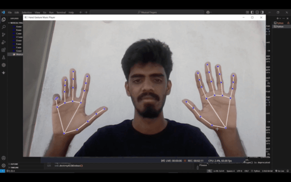
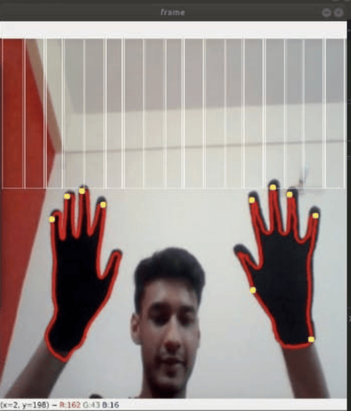

Hand Gesture Music Player

Link: https://www.youtube.com/watch?v=G2jSl59udcs
This project by Hanok John Bennet maps each finger to a musical note using MediaPipe hand tracking, so when you raise or curl a finger, it plays a sound. I appreciate that the interface is simple and responsive with the focal point being the hand skeleton overlay, but I think that the overall interface and interaction design is too simplistic. It could be improved upon by adding additional elements like what notes are being played by each finger and is also missing context/purpose beyond the tech demo itself.
Air Piano using OpenCV and Python

Link: https://towardsdatascience.com/air-piano-using-opencv-and-python-298cb22097d9/
This project by Umar Masud covers his experience building an air piano using OpenCV and Python, where he wears black gloves that allows the system to detect his hands. There's also a virtual piano keyboard displayed where users must hover on the keys to play musical notes. The overall design is pretty straightforward and intuitive, but I think that having to wear gloves in order to easily detect the user's skin color limits accessibility and feels less natural. I'm also not as interested in incorporating a floating piano keyboard on the screen in order to play notes for my own rendition of playing an air piano. I want users to experience what it could feel like to play the piano by solely raising/curling their fingers.